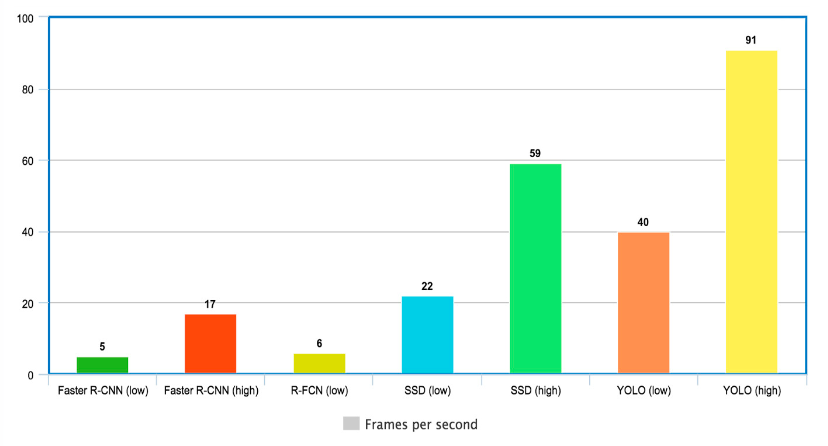
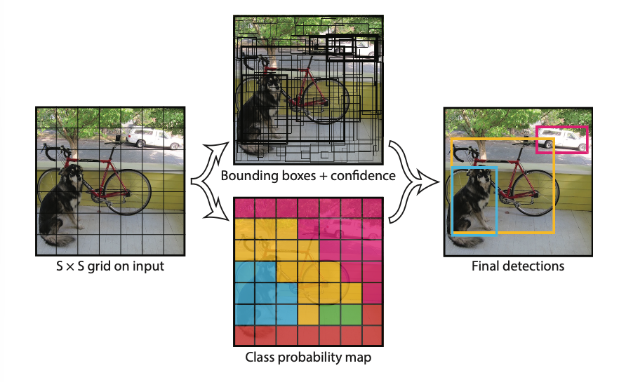
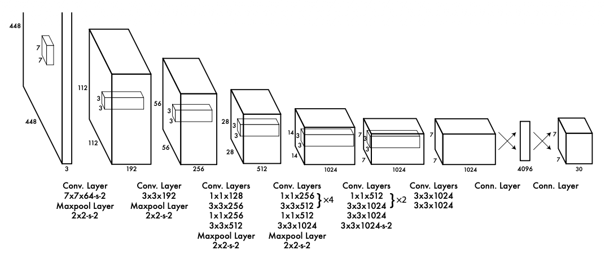
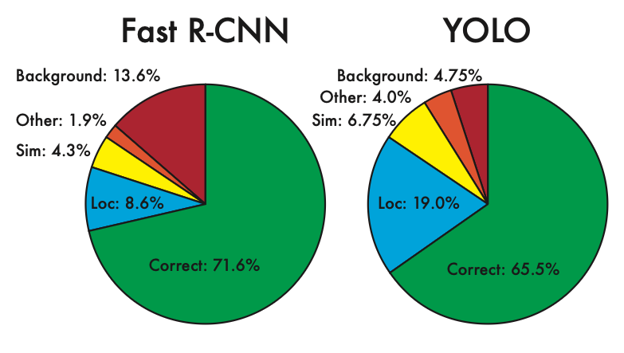

Echtzeit-Objekterkennung ist im Kontext des autonomen Fahrens nicht nur eine akademische, sondern eine sicherheitskritische Anforderung. Klassische zweistufige Verfahren wie R-CNN sind zwar präzise, scheitern jedoch an der nötigen Geschwindigkeit.
YOLO begegnet diesem Problem, indem es die Erkennung als ein einziges Regressionsproblem formuliert, d.h. Grid-System, Bounding Boxes und Confidence Score werden in einem einzigen Durchgang durch ein 24-schichtiges Convolutional-Netz berechnet und im \(7 \times 7 \times 30\) Ausgabetensor kodiert. Mit YOLOv8 ist dieses Prinzip heute mit wenigen Zeilen Python praktisch einsetzbar und liefert auf Standard-Hardware bereits echtzeitfähige Ergebnisse.
Dennoch ist YOLO keine universelle Lösung: Verdeckung, kleine Objekte und schwierige Umgebungsbedingungen bleiben Herausforderungen, die je nach Einsatzszenario eine sorgfältige Modellwahl erfordern
Methodik
Die Echtzeit-Objekterkennung erfolgt in diesem Projekt über die frei verfügbaren Technologien YOLO und OpenCV. Zur Einführung und der darauffolgenden Implementierung dieser, beginnt dieses Projekt mit einer kurzen Einordnung der Objekterkennung als Wiederholung, um dem Leser1 die Vernetzung des Kernthemas zu anderen Tehmen zu erleichtern.
Die Brücke zu YOLO wird über den gleichnamigen Abschnitt YOLO: Intro geschlagen, wo dem Leser die Geschichte und die Natur der verwendeteten Technologie nahegelegt und mit anderen Standards verglichen werden.
In YOLO: Implementierung erfolgt die sukzessive Bearbeitung der Problemstellung. Zugleich werden die System Requierements abgearbeitet (z.B. das Erstellen eines Virtual Environments oder das Installieren von notwendigen Bibliotheken), um die Schritt-für-Schritt Reproduzierbarkeit Seitens des Lesers zu gewährleisten. Dazugehörige Code-Snippets stehen im gesamten Verlauf dieser Webseite ebenso zur Verfügung und können direkt in die eigene Entwicklungsumgebung (VSCode, etc.) kopiert werden. Die Implementierung wird anhand eines frei verfügbaren Videos aus dem Straßenverkehr demonstriert und getestet.
Daraufhin folgen im Abschnitt YOLO: Eigentests drei interaktive Demos, die direkt hier im Browser laufen, ohne lokale Installation. Der Leser kann eigene Bilder hochladen, den Grid-Mechanismus und Confidence-Schwellwert live anpassen sowie einen Echtzeit-Videostream über die eigene Kamera testen.
Abgeschlossen wird das Thema mit Fazit, wo die Ergebnisse und Herausforderungen von YOLO diskutiert werden.
Die Objekterkennung ist Teil des vierten Blocks (Recognition) der klassischen Pipeline des Visual Computings und behandelt das Finden von Objekten in einem Bild oder Video. Dabei wird für jedes Objekt der Ort und die Klassifizierung zurückgegeben. Visuell wird also eine sog. Bounding Box erzeugt, die das erkannte Objekt umrahmt, zusammen mit einem Label, die das Objekt einer Klasse zuschreibt.
Besondere Anforderungen stellt dabei das autonome Fahren. Hier reicht es nicht, Objekte lediglich zu erkennen, denn zusätzlich muss das auch in Echtzeit geschehen, also mit mindestens 24 fps (Frames pro Sekunde), damit ein Fahrzeug rechtzeitig reagieren kann. Klassische Verfahren wie R-CNN sind zwar präzise, scheitern jedoch an genau diesem Anspruch, da sie das Bild in mehreren Schritten verarbeiten (Girshick et al. 2014). Die Rede ist von einem sogenannten Two-Stage-Detector.
Als One-Stage-Detector löst YOLO (You Only Look Once) dieses Problem mit einem anderen Ansatz. Das gesamte Medium wird nämlich in einem einzigen Durchgang durch das neuronale Netz verarbeitet, was eine Erkennung von 45 fps (als base model) bis zu 166 fps (als fast model) ermöglicht und damit Echtzeit-Objekterkennung erst praktisch umsetzbar macht (Redmon et al. 2015).
2. YOLO: Intro
YOLO ist ein Open Source Projekt zur Echtzeit-Objekterkennung welches in seiner Originalfassung erstmalig 2015 von Joseph Redmon, Santosh Divvala, Ross Girshik und Ali Farhadi unter dem Titel You Only Look Once: Unified, Real-Time Object Detection veröffentlich wurde (Redmon et al. 2015).
Die Autoren setzten in ihrer Forschungsarbeit auf einen Ansatz, der die Objekterkennung als ein einziges Regressionsproblem formuliert. Das bedeutet, dass das gesamte Bild genau einmal durch ein einziges Neuronales Netz geschickt wird und dieses dabei gleichzeitig alle erkannten Objekte mit ihren Positionen und Klasen ausgibt. Es gibt also keine zweiten Schritte oder separaten Klassifikatoren.
Wir erinnern uns: Zweistufige Verfahren wie R-CNN beginnen hingegen mit sog. Region Proposals, d.h. der Algorithmus schlägt zunächst hunderte mögliche Bildausschnitte vor, die ein Objekt enthalten könnten und klassifiziert dann jeden einzeln. Faster R-CNN schafft als einer der schnellsten Varianten etwa 5 fps bis 17 fps auf einem Standard Backbone, was für ein fahrendes Auto schlicht zu wenig ist.

Geschwindigkeit von YOLO im Vergleich zu anderen Modellen. (Sanchez et al. 2020, Abbildung 6)
2.1 Ablauf
Das sog. Grid-System macht die Verarbeitung eines ganzen Bildes in einem einzigen Netz erst möglich. Das Eingabebild wird dabei in ein gleichmäßiges Raster \(S \times S\) aufgeteilt und wie eine Schablone über das Bild gelegt. Jede dieser Rasterzellen übernimmt dann die Verantwortung für genau den Bildbereich, den sie abdeckt. Konkret gilt: Fällt der Mittelpunkt eines Objekts in eine bestimme Zelle, ist genau diese für die Erkennung dieses Objektes verantworklich (Redmon et al. 2015, Kapitel 2).

Das Bild wird in ein \(S \times S\) Grid aufgeteilt. Jede Zelle sagt \(B\) Bounding Boxes mit Confidence und \(C\) Klassenwahrscheinlichkeiten voraus. Alles kodiert in einem einzigen Tesnor: \(S \times S \times (B \cdot 5 + C)\). (Redmon et al. 2015, Abbildung 2)
Für jeder dieser Zellen sagt das Modell gleichzeitig mehrere Dinge vorher:
Bounding Boxes: Jede Zelle schlägt \(B\) mögliche Bounding Boxes vor, beschrieben durch fünf Werte aus Mittelpunkt \((x, y)\) des erkannten Objekts zur Rasterzelle, Abmessung \((w, h)\) zwischen Box und Gesamtbild und Confidence Score.
Confidence Score: Dieser Wert beantwortet zum einen, ob ein Objekt überhaupt in der Box vorhanden ist und zum anderen, wie gut die Box wirklich zum Objekt passt. Das Modell kombiniert beide Informationen in einer einzigen Kennzahl:
\[
\text{Confidence} =
\underbrace{\Pr(\text{Object})}_{\substack{\text{Ist ein Objekt} \\ \text{vorhanden?}}}
\times
\underbrace{\text{IOU}_{\text{pred}}^{\text{truth}}}_{\substack{\text{Wie gut passt} \\ \text{die Box?}}}
\]
Klassenwahrscheinlichkeiten: Zusätzlich zur Box schätzt jede Zelle, welcher Klasse das Objekt angehört, also z.B. „Auto”, „Person” oder „Fahrrad”. Diese Klassenwahrscheinlichkeit wird am Ende mit dem Confidence Score multipliziert, sodass das Modell für jede Box einen finalen, klassenspezifischen Score ausgibt.
Das Gesamtmodell fasst alle Vorhersagen aller Zellen in einer einzigen verschachtelten Zahlenstruktur zusammen (Tensor, vereinfacht gesagt ein mehrdimensionales Array). Seine Dimension ist \(S \times S \times (B \cdot 5 + C)\), d.h. jede der \(S \times S\) Zellen werden \(B\) Boxen mit je 5 Werten sowie \(C\) Klassenwahrscheinlichkeiten gespeichert.
Die Autoren evaluierten ihr Modell auf PASCAL VOC, einem standardisierten Benchmark-Datensatz für Objekterkennung mit 20 vordefinierten Klassen (u.a. Auto, Person, Hund), der in der Computer-Vision-Forschung als gemeinsame Vergleichsbasis weit verbreitet ist. Mit \(S = 7\), \(B = 2\) und \(C = 20\) ergibt sich ein Ausgabe-Tensor der Größe \(7 \times 7 \times 30\).
2.2 Architektur

Die grundlegende Architektur des Modells, wie es 2015 veröffentlicht wurde. (Redmon et al. 2015, Abbildung 3)
Das YOLO-Netz besteht aus zwei klar getrenten Phasen, die auf ImageNet2 trainiert wurden:
Feature-Extractor
24 Convolutional Layer verarbeiten das Eingabebild (\(448 \times 448\) Pixel) schrittweise. Vier zwischengeschaltete MaxPooling-Schichten sowie ein abschließender Conv-Layer mit Stride 2 halbieren die räumliche Auflösung, während die Kanaltiefe gleichzeitig wächst (von ursprünglichen \(3\) für RGB auf schließlich \(1024\)). Das Bild wird also räumlich von \(448 \times 448\) auf \(7 \times 7\) komprimiert, während das Netz durch die mehr Kanäle auch zunehmend mehr abstrakte Merkmale extrahieren kann, d.h. von bloßen Kanten und Ecken hin zu ganzen Objektformen.
Zwiscchen den 3x3-Convolutional-Layern schalten die Autoren sogenannte 1x1-Convolutional-Layer ein, die die Kanaltiefe vorübergehend reduzieren. Eine bewerte Methode, um den Rechenaufwand zu reduzieren (Echtzeitverhalten), ohne wesentliche Genauigkeit zu verlieren (Redmon et al. 2015, Kapitel 2.1).
Predicition Head
Die nun im Format \(7 \times 7 \times 1024\) vorliegenden Maps mit den extrahierten Features werden abgeflacht (flattened) und durch zwei vollverbundene Schichten geleitet. Dabei zunächst auf \(4096\) Neuronen und dann direkt auf den finalen Ausgabetensor der Größe \(7 \times 7 \times 30\). Dieser Tensor entspricht genau dem in Abschnitt 2.1 beschriebenen Grid mit Anzahl Zellen \(S = 7\), Anzahl Boxen \(B = 2\) und Anzahl Klassen \(C = 20\).
Das Raster im \(7 \times 7\) Format ergibt sich also natürlich aus der Netzarchitektur selbst (Redmon et al. 2015, Abbildung 3).
2.3 YOLO-Versionen
Seit der Erstveröffentlichung 2015 wurde YOLO stetig weiterentwickelt. Jede Version adressierte konkrete Schwächen der Vorgängerversion: Scheinbar mal in Richtung Geschwindigkeit, mal in Richtung Genauigkeit und mal in Richtung einfacherer Nutzbarkeit.
YOLOv1 (2015): Das Grundprinzip, also die Grid-basierte Regression in einem Durchgang.
YOLOv2 (2016): Einführung von Anchor Boxes, die typische Objektformen vorwegnehmen und die Erkennung kleiner Objekte verbessern.
YOLOv3 (2018): Erkennung auf drei Skalen gleichzeitig; besonders hilfreich für Objekte unterschiedlicher Größe im selben Bild.
YOLOv4/v5 (2020): Community-getriebene Weiterentwicklungen mit zahlreichen Trainingstricks; YOLOv5 vollzog den Wechsel zu PyTorch und vereinfachte den Export auf Edge-Geräte erheblich (Terven and Cordova-Esparza 2023, Kapitel 9).
YOLOv8 (2023): Die aktuell verbreitetste Version. Kernerneuerung ist die anchor-free Architektur: Statt vordefinierten Acnhor Boxes lernt das Modell Boxpositionen direkt, was den Trainingsprozess vereinfacht und die Genauigkeit steigert. Zudem wurde ein decoupled head eingeführt, der Klassifizierung und Lokalisation in getrennten Zweigen berechnet (Jocher et al. 2023).
YOLO26 (2025): Aktuellste Version. Führt NMS-freie End-to-End-Inferenz ein und entfernt den Distribution Focal Loss (DFL), was den Export vereinfacht und die native CPU-Inferenz um bis zu 43 % beschleunigt. Für dieses Projekt wird dennoch YOLOv8 eingesetzt, da es zu diese, Zeitpunkt die am weitesten verbreitete und best dokumentierteste Version ist und die zugrunde liegenden Konzepte (anchor-free Detektion, decoupled head, etc.) exemplarisch vermittelt.
3. YOLO: Implementierung
Die Implementierung erfolgt in Python unter Verwendung von YOLOv8 (über Ultralytics) und OpenCV. Der gesamte Code ist so dokumentiert, dass er Schritt für Schritt reproduziert werden kann.
3.1 System Requierements
Zur Reproduzierbarkeit wird eine Python-Umgebung benötigt. Um etwaige Abhängigkeiten sauber zu wissen, empfiehlt sich der Einsatz eines Virtual Environments, um den Workspace zu isolieren.
Erstellen und aktivieren der virtuellen Umgebung:
# Erstellenpython-m venv .venv# Aktivieren (macOS/Linux)source .venv/bin/activate# Alternativ auf Windows# .venv\Scripts\activate
Installieren der benötigten Bibliotheken:
pip install ultralytics opencv-python
Die Bibliothek ultralytics enthält YOLOv8 inklusive aller Abhängigkeiten (u.a. PyTorch). opencv-python wird für das Einlesen und Verarbeiten von Bild- und Videodaten sowie die Ansteuerung von Kamera und Peripherie verwendet.
Überprüfen der Installation:
import ultralyticsimport cv2# Ggf. ist ein Neustart der Entwicklungsumgebung nötig.print(f"Ultralytics Version: {ultralytics.__version__}")print(f"OpenCV Version: {cv2.__version__}")# OUTPUT:
Creating new Ultralytics Settings v0.0.6 file ✅
View Ultralytics Settings with 'yolo settings' or at '/home/runner/.config/Ultralytics/settings.json'
Update Settings with 'yolo settings key=value', i.e. 'yolo settings runs_dir=path/to/dir'. For help see https://docs.ultralytics.com/quickstart/#ultralytics-settings.
Ultralytics Version: 8.4.46
OpenCV Version: 4.13.0
3.2 Objekterkennung im Straßenverkehr
Als Testmedium dienen verschiedene frei verfügbares Video aus dem Kontext Straßenverkehr. Diese werdem Frame für Frame eingelesen, durch das YOLO-Modell verarbeitet und die erkannten Objekte anschließend mit Bounding Boxes versehen.
Modell laden:
from ultralytics import YOLOmodel = YOLO("yolov8s.pt")# OUTPUT:
Downloading https://github.com/ultralytics/assets/releases/download/v8.4.0/yolov8s.pt to 'yolov8s.pt': 100% ━━━━━━━━━━━━ 21.5MB 238.0MB/s 0.1s
YOLOv8 steht in verschiedenen Größen zur Verfügung, von yolov8n.pt (Nano, schneller) bis yolov8x.pt (Extra Large, genauer). Für dieses Projekt wird yolov8s.pt (Small) verwendet, da es eine gute Balance zwischen Geschwindigkeit und Genauigkeit bietet.
Verarbeitungsfunktion definieren:
import cv2, random, time# Jeder Klasse wird eine eindeutige reproduzierbare Farbe zugewiesen (z.B. "Auto" immer blau)def get_color(cls_id): random.seed(cls_id)returntuple(random.randint(0, 255) for _ inrange(3))# Frame-für-Frame-Verarbeitung mit YOLOdef process_video(input_video_path, output_path):# Video einlesen und Metadaten (FPS, Auflösung) auslesen cap = cv2.VideoCapture(input_video_path) fps = cap.get(cv2.CAP_PROP_FPS) width =int(cap.get(cv2.CAP_PROP_FRAME_WIDTH)) height =int(cap.get(cv2.CAP_PROP_FRAME_HEIGHT))# Ausgabedatei mit gleicher Auflösung und FPS wie Eingabe vorbereiten out = cv2.VideoWriter(output_path, cv2.VideoWriter_fourcc(*"MP4V"), fps, (width, height))# Optional: Laufzeitstatistik, Initalsierung# frame_count = 0# total_infer_ms = 0.0whileTrue: ret, frame = cap.read()ifnot ret:# Ende des Videos erreichtbreak# Optional: Laufzeitstatistik, weiter definieren# t0 = time.perf_counter() results = model(frame, verbose=False)# total_infer_ms += (time.perf_counter() - t0) * 1000# frame_count += 1# Aktuellen Frame durch YOLO schicken; gibt Bounding Boxes, Klassen und Confidence zurückfor result in results:# Nur Boxen mit Confidence > 40% anzeigen (niedrigere Werte sind meist Fehler)for box in result.boxes:if box.conf[0] >0.4: x1, y1, x2, y2 =map(int, box.xyxy[0]) # Eckpunkte der Bounding Box cls =int(box.cls[0]) # Klassen-ID (z.B. 2 = Auto) label =f"{result.names[cls]}{float(box.conf[0]):.2f}"# Beispiel "car 0.87" color = get_color(cls)# Bounding Box und Label in den Frame zeichnen cv2.rectangle(frame, (x1, y1), (x2, y2), color, 2) cv2.putText(frame, label, (x1, max(y1 -10, 20)), cv2.FONT_HERSHEY_SIMPLEX, 0.6, color, 2)# Verarbeiteten Frame in Ausgabevideo schreiben out.write(frame)# Optional: Laufzeitstatistik, Berechnung und Ausgabe# avg_ms = total_infer_ms / frame_count if frame_count else 0# avg_fps = 1000 / avg_ms if avg_ms else 0# print(f"Verarbeitete Frames: {frame_count}")# print(f"Durchschn. Inferenzzeit pro Frame: {avg_ms:.1f} ms")# print(f"Durchschn. Inferenz-FPS: {avg_fps:.1f}") cap.release() out.release()
Die erreichbare Verarbeitungsgeschwindigkeit hängt stark von der verfügbaren Hardware ab. Während eine dedizierte GPU für eingebettete Fahrzeugtechnik (z.B. NVIDIA mit CUDA) problemlos 40–100+ FPS ermöglicht, sind auf einer standard Laptop-CPU typischerweise 5–25 FPS realistisch.
4. YOLO: Eigentests
Die folgenden Demos laufen direkt im Browser ohne lokale Installation. Möglich macht das das zuvor exportierte Modell yolov8n.onnx, das über die Bibliohtek onnxruntime-web direkt im Browser ausgeführt wird 4.
Aufgrund technischer Einschränkungen des Hostings (GitHub Pages) ist die Inferenzgeschwindigkeit bei Video und Webcam auf geringere FPS begrenzt. Die Objekterkennung funktioniert korrekt, läuft jedoch nicht in optimaler Echtzeit. Diese Demos dienen somit in erster Linie dem tieferen Verständnis des Lesers.
Bild oder Video hier ablegen oder klicken zum Auswählen
0.40
Bounding Box
Objektmittelpunkt
4.3 Objekterkennung Kamera/Live-Stream
0.40
Bounding Box
Objektmittelpunkt
Fazit
YOLO löst das in Abschnitt 1 beschriebene Problem der Echtzeit-Objekterkennung konsequent. Statt ein Bild in mehreren Schritten zu verarbeiten, formuliert es die Erkennung als ein einziges Regressionsproblem: Einmal durch das Netz, ein Ausgabetensor, alle Ergebnisse. Die Implementierung mit YOLOv8 in Abschnitt 3 zeigt, dass dieses Prinzip heute mit wenigen Zeilen Python produktiv einsetzbar ist, und die interaktiven Demos in Abschnitt 4 machen die zugrundeliegenden Konzepte direkt erfahrbar.
So leistungsfähig YOLO auch ist gibt es Szenarien, in denen das System an seine Grenzen stößt. Diese zu kennen sind wichtig, um die Ergebnisse im Demo-Kapitel korrekt einordnen zu können.
Occlusion (Verdeckung): Da jede Rasterzelle nur eine Klasse vorhersagen kann, hat YOLO Schwierigkeiten, wenn mehrere Objekte derselben Klasse eng beieinanderliegen oder sich gar überlappen. Zum Beispiel eine Menschenmenge oder dicht aufgefahrene Fahrzeuge. Verdeckte Objekte werden oft auch gar nicht oder als falsche Klasse erkannt (Redmon et al. 2015, Kapitel 2.4; Terven and Cordova-Esparza 2023, Seite 29).
Kleine Objekte: Das Grid-System ist von Natur aus eine Vergröberung des Bildes. Sehr kleine Objekte, die vielleicht nur in einer einzigen Zelle liegen, gehen dabei leicht unter. Die Originalautoren räumen dieses Problem selbst ein (Redmon et al. 2015, Kapitel 2.4).
FPS vs. Genauigkeit: YOLO existiert in verschiedenen Größen (z.B. yolov8n bis yolov8x). Kleinere Varianten sind schneller, aber ungenauer. Größere präziser, aber langsamer. Welche Variante sinnvoll ist, hängt stets vom Einsatszenario ab. Ein Roboter in einer kontrollierten Umgebung hat selbstverständlich andere Anforderungen als ein Fahrzeug im Straßenverkehr.
Umgebungsbedingungen: Schlechte Lichtverhältnisse, Regen oder dicht gedrängter Verkehr können die Erkennungsrate erheblich senken, besonders im Kontext des autonomen Fahrens eine nicht zu unterschätzende Einschränkung.
Fehleranalyse im Vergleich zu Fast R-CNN: Die Fehlerarten beider Modelle unterschieden sich grundlegend. YOLO macht deutlich mehr Lokalisierungsfehler (Loc: 19.0% vs. 8.6%); die Box sitzt also häufiger nicht exakt.
Fast R-CNN hingegen erkennt fast dreimal so häufig Hintergrundbereiche fälschlicherweise als Objekte (Background: 13.6% vs. 4.75%), weil es jeden Ausschnitt isoliert betrachtet und den größeren Bildkontext nicht sieht (Redmon et al. 2015).

Fehleranalyse von Fast R-CNN (links) vs. YOLO (rechts). YOLO macht mehr Lokalisierungsfehler, Fast R-CNN hingegen deutlich mehr Hintergrundfehler. (Redmon et al. 2015, Abbildung 4)
References
Friedrich, Markus. 2026. Visual Computing: Erkennung (Klassifikation, Segmentierung, Objekterkennung, Anomalierkennung). In Vorlesungsskript, Hochschule München (HM) Für Angewandte Wissenschaften. https://hm.edu/kontakte_de/contact_detail_55814.de.html.
Girshick, Ross, Jeff Donahue, Trevor Darrell, and Jitendra Malik. 2014. Rich Feature Hierarchies for Accurate Object Detection and Semantic Segmentation. https://arxiv.org/abs/1311.2524.
Redmon, Joseph, Santosh Divvala, Ross Girshick, and Ali Farhadi. 2015. You Only Look Once: Unified, Real-Time Object Detection. https://arxiv.org/abs/1506.02640.
Sanchez, S. A., H. J. Romero, and A. D. Morales. 2020. “A Review: Comparison of Performance Metrics of Pretrained Models for Object Detection Using the TensorFlow Framework.”IOP Conference Series: Materials Science and Engineering.
Terven, Juan, and Diana Cordova-Esparza. 2023. “A Comprehensive Review of YOLO Architectures in Computer Vision.”Machine Learning and Knowledge Extraction. https://arxiv.org/abs/2304.00501.
Footnotes
Aus Gründen der Lesbarkeit wird im Verlauf der gesamten Webseite das generische Maskulinum verwendet.↩︎
ImageNet ist ein riesiger Bilddatensatz mit über 14 Millionen annotierten Bildern aus über 20.000 Klassen, der als Standard-Benchmark für das Vortraining von Bilderkennungsnetzen gilt. YOLO nutzt jedoch beim Vortraining nur die ILSVRC-Untermenge mit 1000 Klassen und ca. 1,2 Millionen Bildern (Redmon et al. 2015, Kapitel 2.2).↩︎